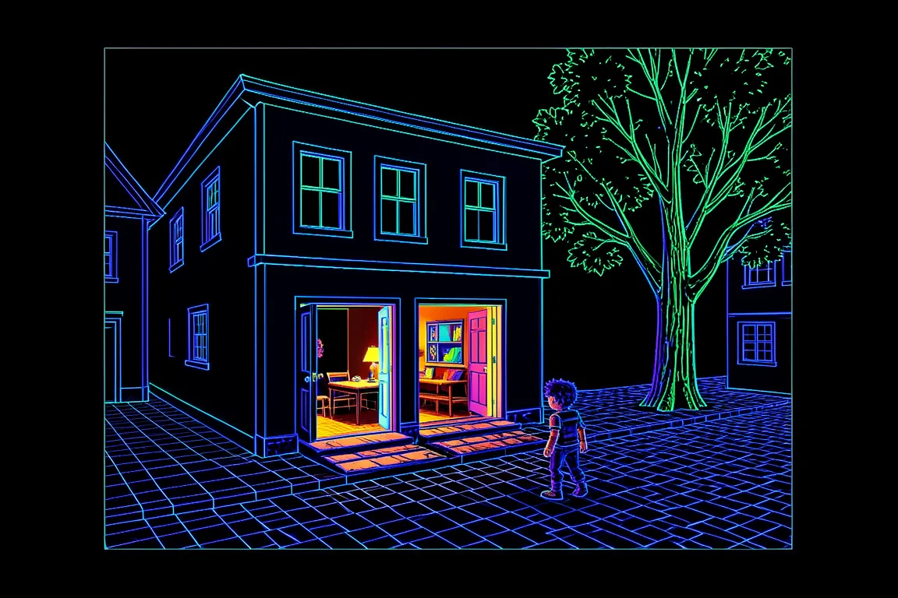

игры · 1979–1985 · также: Аркады с векторной графикой, Аркады со светящимися линиями
Луч трубки рисует линии, а не пиксели. Яркие монохромные или цветные контуры светятся на чистом чёрном, без заливки и текстуры, а мир построен из каркасных форм.

Главная идея
Мир можно нарисовать одним светом: нескольких резких светящихся линий на чёрном достаточно, чтобы глаз достроил пространство.
Принципы дизайна
Рисуйте каждый объект контуром из прямых отрезков; без залитых областей.
Держите фон чисто чёрным; это пространство между линиями.
Делайте линии яркими и позволяйте им светиться на 1–3 px в темноту.
Берите 1–4 полностью насыщенных цвета, по одному на класс объектов.
Показывайте глубину перспективными каркасами и точкой схода, а не затенением.
Держите каждую форму примерно до 30 отрезков, чтобы она читалась с одного взгляда.
Антипаттерны
Залитые или текстурированные поверхности
Серый или цветной фон
Мягкие градиенты или нарисованное затенение
Плотная детализация, которую луч не успевает нарисовать за кадр